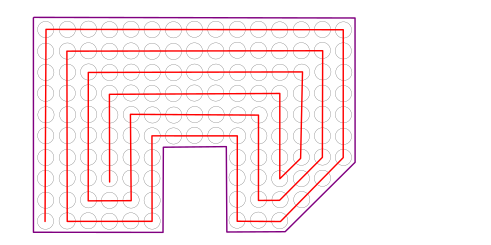

Optimization
Drilling point optimization allows any drilling patterns to be optimized in accordance with various criteria (not available for the Turning strategy), so that the stresses and heat that are generated during drilling are distributed as evenly as possible over the entire surface.
Note
hyperMILL generates a graphical feedback of the drilling points that have been selected for machining. Since a large number of drilling points requires a correspondingly powerful computer to calculate and display this graphical preview, the preview display is limited to 1000 drilling points by default.
5X Drilling
Two different optimization methods are available for 5-axis drilling.
5X
Frame view: The machining paths for the selected drill holes are calculated from the frame view, while taking account of the selected drilling strategy. All of the drilling strategies that can be applied during 2D drilling are available.
5X grouping: The machining paths for the selected drill holes are combined into groups and calculated according to the shortest distance method. The grouping depends on the tool axis (B axis/C axis) that may be moved first.
The machining paths from one frame to the next can be checked for collisions (optional) if the corresponding parameter (Setup dialog box) is enabled.
Start
Use start reference: Select a start point, if you want optimization to begin at a defined starting point.
Parameters
Move B axis first / Move C axis first: Control the grouping of drill holes and thus specify the machining sequence. The drilling points are always processed in a vertical direction first (Z direction of the NCS). Afterwards, the method for 5X movement is used.
Sorting strategy
Off: Drill holes are machined in the order in which they were selected.
Shortest distance: Machining is carried out starting with the (drilling) point closest to the origin of the specified coordinate system (frame), followed by the next closest in each case. Select the Use start reference option to use a start point as the reference for the beginning of the optimization.
Circular: The drill holes to be machined are divided into concentric circle segments starting from a center point.
X or Y parallel: The drill holes to be machined are divided into segments that are referenced on the X or Y axis of the selected machining coordinate system (frame).
Contour parallel: The drill holes are machined along the outline of the outer contour of the drilling point pattern.
More information about the various parameters is provided in the next few chapters.
Frame dependent: Available for the 5X Helical Drilling cycle. The direction of the drill holes is aligned with the Z axis of the defined frame system. When using features, the frame system is part of the feature definition. All drill holes can be collision checked using the Milling area.
Circular sorting strategy
Start
Use start reference: Define any point as the start point. This start point can be inside or outside of the drilling point pattern. In this case, machining starts from the defined start reference and moves to the neighboring point in accordance with the Machining direction and Orientation.
Z optimization
Z optimization: Use the Max. Z depth parameter to specify the conditions for optimized machining of drill holes at different Z levels. If the distance between two levels is greater than this value, all of the drill holes on one level are fully machined first before moving to the next level. XY optimization takes place on every level, while taking account of the relevant starting points.
This method reduces the number of empty paths.
(1) without Z optimization, (2) with Z optimization.
Orientation
The parameters for controlling orientation relate to the machining of the segments.
Clockwise: The segments are machined in clockwise order.
Counterclockwise: The segments are machined in counterclockwise order.
Zigzag: The orientation (clockwise/counterclockwise) is reversed after each segment of the circle.
Machining
Inside-Out: With this option, the drill holes are machined within radial distance from the inside outwards.
Outside-In: With this option, the drill holes are machined within radial distance from the outside inwards.
Parameters
Radial width (1): Width of a circle segment, measured from the center of the machining area.
Center point: In order to obtain a correct toolpath calculation, it is essential to define a center point. The center point to be defined represents the center point of all circle segments that define the machining area.
In the following, the surface between two concentric circles will be referred to as a circle segment. The term circle segment is not used in hyperMILL. It is only used in this documentation to describe the drilling optimization functionality.
Example:
In the example (see illustration), all the drilling points that lie within the radial distance in a circle segment are machined. In this context, machining continues with the neighboring drilling point. Once all the drilling points in a circle segment have been processed, the machine moves to the next circle segment.
The machining sequence in the example is: circle segment A, circle segment B, circle segment C. Machining is clockwise from the outside in.
 |
X / Y parallel sorting strategy
Orientation
Zigzag: The machining direction of the segments changes after each segment.
Oneway: The segments are always machined in the same direction.
Shortest distance: Machining continues from the last drilling point of a segment to the closest drilling point in the next segment.
Machining
Revert X: The machining direction oriented on the X axis of the frame coordinate system is reversed.
Revert Y: The machining direction oriented on the Y axis of the frame coordinate system is reversed.
Parameters
Segment width (A): Width of a segment extending in the X or Y direction. Corresponds to the maximum distance between points in the X or Y direction within a segment.
Examples:
The following parameters are defined in example 1:
|
Drilling strategy |
X parallel |
|
Orientation |
Shortest distance |
|
Segment width |
4 |
The following parameters are defined in example 2:
|
Drilling strategy |
X parallel |
|
Orientation |
Shortest distance |
|
Segment width |
2 |
Max. segment gap: Value of the maximum distance between two subareas of the same surface on which the drilling points to be machined are located.
The following parameters are defined in the example on the left:
|
Drilling strategy |
Y parallel |
|
Orientation |
Zigzag |
|
Segment width (S) |
1 |
|
Max. Segment gap |
7 |
Contour parallel drilling strategy
Orientation
The parameters for controlling the orientation refer to the shape of the outer contour of the drilling point pattern (see example above).
Clockwise: The drilling points are machined in clockwise order.
Counterclockwise: The drilling points are machined in counterclockwise order.
Zigzag: The orientation (clockwise/counterclockwise) is reversed after each machining pass.
|  |
Parameters
Max. drilling point gap: Value of the maximum possible distance between two drilling points (P1, P2). If two drilling points are located within this limit, machining is carried out directly from P1 to P2 or vice versa.
Examples:
The following parameters are defined in the examples:
Example 1:
|
Drilling strategy |
Contour parallel |
|
Orientation |
Counterclockwise |
|
Max. drilling point gap |
3 |
Example 2:
 |
|
Drilling strategy |
Contour parallel |
|
Orientation |
Counterclockwise |
|
Max. drilling point gap |
5 |
5X Drilling
Two different optimization methods are available for 5-axis drilling.
5X
Frame view: The machining paths for the selected drill holes are calculated from the frame view, while taking account of the selected drilling strategy. All of the drilling strategies that can be applied during 2D drilling are available.
5X grouping: The machining paths for the selected drill holes are combined into groups and calculated according to the shortest distance method. The grouping depends on the tool axis (B axis/C axis) that may be moved first.
The machining paths from one frame to the next can be checked for collisions (optional) if the corresponding parameter (Setup dialog box) is enabled.
Start
Use start reference: Select a start point, if you want optimization to begin at a defined starting point.
Parameters
Move B axis first / Move C axis first: Control the grouping of drill holes and thus specify the machining sequence. The drilling points are always processed in a vertical direction first (Z direction of the NCS). Afterwards, the method for 5X movement is used.
Z optimization
Z optimization: Use the Max. Z depth parameter to specify the conditions for optimized machining of drill holes at different Z levels. If the distance between two levels is greater than this value, all of the drill holes on one level are fully machined first before moving to the next level. XY optimization takes place on every level, while taking account of the relevant starting points.
This method reduces the number of empty paths.
(1) without Z optimization, (2) with Z optimization.